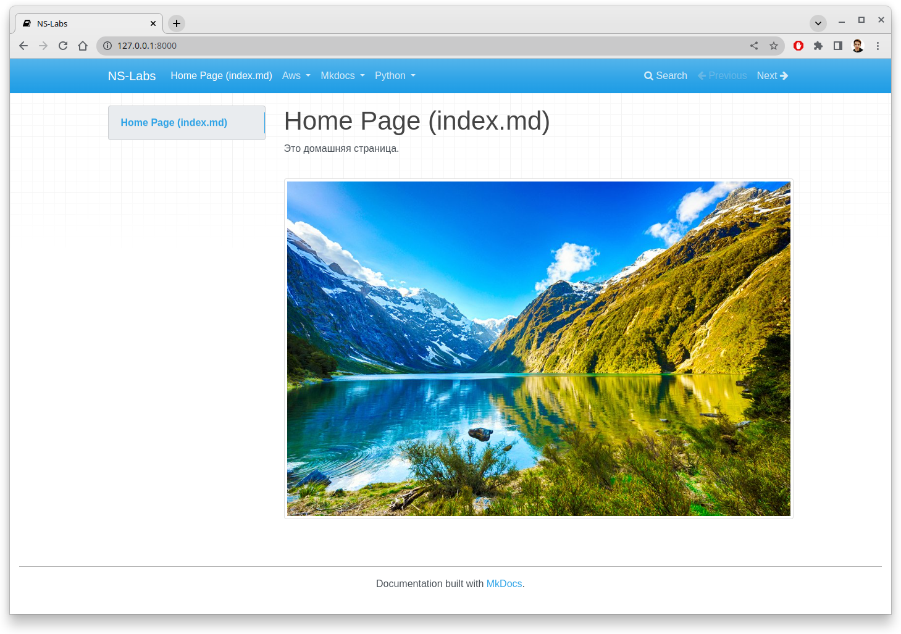
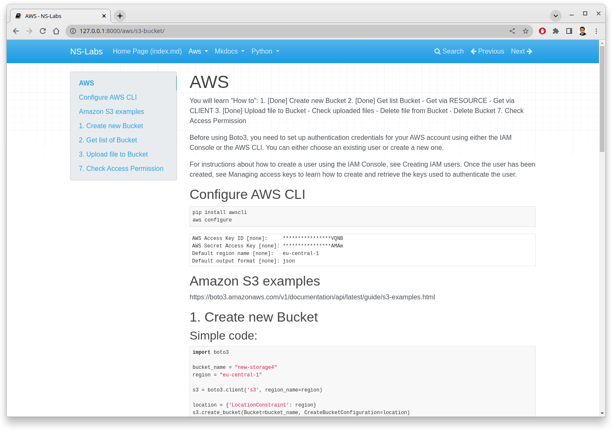
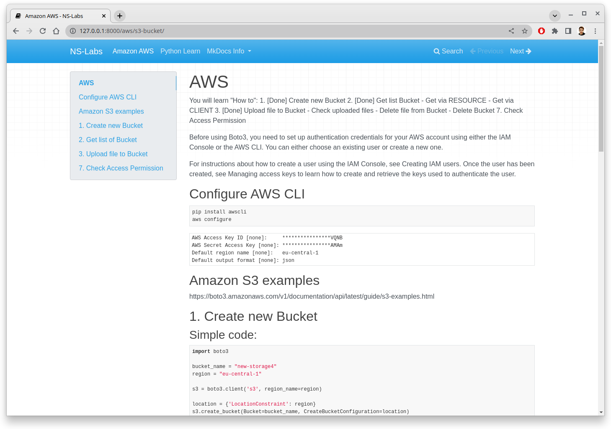
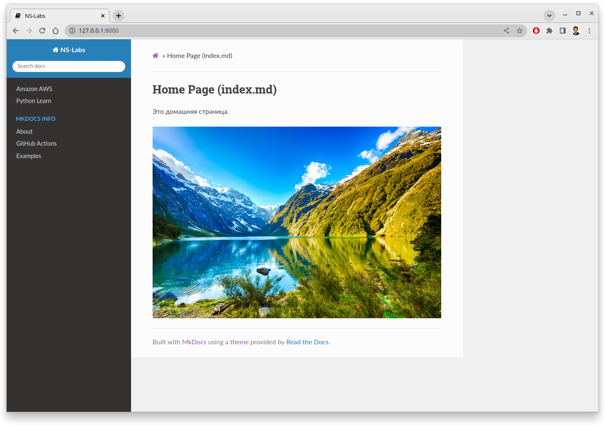
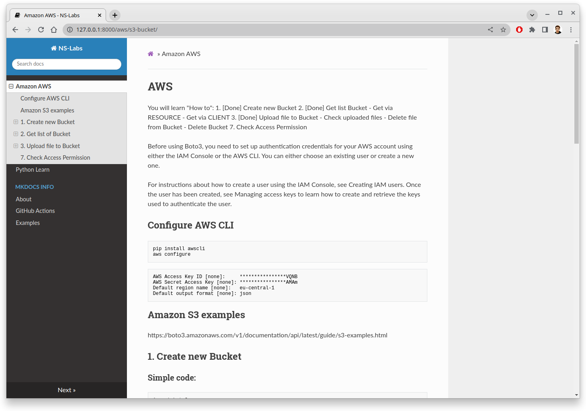

Config yaml examples
Site Name
site_name: NS-Labs
 
Navigation
site_name: NS-Labs
nav:
- Amazon AWS: 'aws/s3-bucket.md'
- Python Learn: 'python/class.md'
- MkDocs Info:
- About: 'mkdocs/info.md'
- GitHub Actions: 'mkdocs/GH-Actions.md'
- Examples: 'mkdocs/ConfigYAMLexamples.md'

Themes
External Themes: GitHub MkDocs-Themes
- Install
pip install mkdocs-windmill
- yml config
site_name: NS-Labs
nav:
- Amazon AWS: 'aws/s3-bucket.md'
- Python Learn: 'python/class.md'
- MkDocs Info:
- About: 'mkdocs/info.md'
- GitHub Actions: 'mkdocs/GH-Actions.md'
- Examples: 'mkdocs/ConfigYAMLexamples.md'
theme:
name: readthedocs
highlightjs: true
hljs_languages:
- yaml
- rust
prev_next_buttons_location: bottom
 